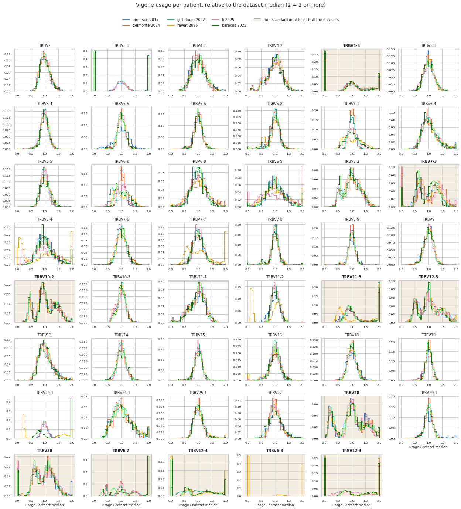

Germline variation in V-gene usage
Some V genes vary in usage between people for germline reasons: a gene deleted from one or both
chromosomes, or an allele that is used more or less. That variation isn't technical, yet in a merged
dataset it can still line up with a batch or a label (e.g. through ancestry). vAIRRify marks these genes
in the PCA plot (vf.features.GERMLINE_V_GENES):
TRBV4-3, TRBV6-2/6-3, TRBV7-2, TRBV7-3, TRBV28, TRBV30
The analysis below also flags TRBV10-2, TRBV11-3 and TRBV12-5 as candidates. TODO: decide whether to add them.
The literature: Omer et al. 2022
Omer A., Peres A., ..., Yaari G. T cell receptor beta germline variability is revealed by inference from repertoire data. Genome Medicine 14:2 (2022). doi:10.1186/s13073-021-01008-4
- A common ~21-kb deletion removes TRBV4-3, the pseudogene TRBV3-2 and one of the identical pair TRBV6-2/6-3. In their data, TRBV4-3 was absent from the expressed repertoire of 8 of 28 and 8 of 25 people.
- The TRBV7-2*02 allele marks that deletion. All 40 long-read haplotypes carrying it had the deletion, as did 8 of the 27 carrying *01. TRBV6-2/6-3 usage in people with two copies of *02 was less than half that in people with two copies of *01.
- Rarer deletions of single genes: TRBV11-1, TRBV7-3, TRBV30 (also a pseudogene allele with an in-frame stop codon), TRBV2, TRBV4-2, TRBV6-5, TRBV5-5, TRBV13 and TRBV28 (on one chromosome, 4 samples)
- Haplotypes: TRBV28*Del and TRBV24-1*02 were both seen on the chromosome carrying TRBJ1-6*02
- Some genes can't be told apart with every protocol: TRBV6-2/6-3 at full length; with Adaptive reads also TRBV12-3/12-4, TRBV3-1/3-2 and TRBV6-5/6-6
The evidence: all V genes in six cohorts
Which genes actually have non-standard usage? For every V gene we compared each patient's usage to the dataset median, in one repertoire per patient with at least 20,000 clonotypes.
| Dataset | Patients | Protocol |
|---|---|---|
| Emerson et al. 2017 | 782 | Adaptive |
| DelMonte et al. 2024 | 495 | Adaptive |
| Gittelman et al. 2022 | 2,589 | Adaptive |
| Rawat et al. 2026 | 2,072 | Adaptive (via iReceptor) |
| Li et al. 2025 | 1,040 | TODO: confirm |
| Karakus et al. 2025 | 800 | TODO: confirm (via iReceptor) |
A gene is non-standard in a dataset when:
- at least 2% of patients lack it (below 0.05× the median, as a deletion on both chromosomes would give), or
- its usage has at least two modes, each holding 3% of patients: peaks of a smoothed density of log2(usage / median), with a prominence of at least 15% of the highest peak
It is highlighted when non-standard in at least half the datasets that assign it.

What the highlighted genes are
| Gene | Non-standard in | Pattern | Reading |
|---|---|---|---|
| TRBV4-3 | 6 of 6 | absent in 21–27% | the 21-kb deletion on both chromosomes |
| TRBV7-3 | 6 of 6 | absent in 5–10%; two further groups | a deletion polymorphism (both chromosomes, one, neither) |
| TRBV30 | 6 of 6 | absent in 5–7% | a deletion, or the pseudogene allele |
| TRBV28 | 4 of 6 | a low group at ~0.1–0.2×, never absent | more like a common low-usage allele than a deletion |
| TRBV6-2/6-3 | 4 of 4 assigning it | two or three groups | one gene copy fewer: 0.43–0.46× where TRBV4-3 is absent (karakus 0.74×) |
| TRBV10-2 | 6 of 6 | two modes at ~0.5× and 1×, and a shoulder at ~1.4× | new: 1.31–1.40× higher where TRBV4-3 is absent, so tied to the deletion haplotype. Not in Omer et al. |
| TRBV11-3 | 6 of 6 | a high group at 2× or more | new, unexplained; not tied to TRBV4-3 (~1× where it's absent) |
| TRBV12-5 | 3 of 6 | groups around 0.5×, 1× and 1.5× | new, weaker; not tied to TRBV4-3 |
| TRBV12-3, TRBV12-4, TRBV6-3 | 3 of 3, 3 of 3, 1 of 1 | 5–49% of patients at zero | gene assignment: these pairs can't be told apart, and only some exports assign them |
Checks on the new genes
- Not a swap with a similar gene. If an allele were assigned to a neighbouring gene, the two would trade usage. Instead they barely correlate: TRBV10-2 with TRBV10-3 ρ = +0.09 to +0.16, TRBV11-3 with TRBV11-2 +0.02 to +0.32, TRBV12-5 with TRBV12-4 +0.13 to +0.17. The exception is rawat, where TRBV11-3 and TRBV11-2 do trade (ρ = −0.64): an annotation effect in that export.
- Linked to the deletion haplotype: TRBV10-2 rises (1.31–1.40×) and TRBV7-2 falls (0.56–0.60×) where TRBV4-3 is absent. TRBV11-3 and TRBV12-5 don't move.
- TRBV28 and TRBV24-1 usage correlates (ρ = +0.21 to +0.38), consistent with Omer et al. seeing TRBV28*Del and TRBV24-1*02 on the same chromosome. TODO: check at haplotype level.
Not highlighted, but worth knowing
- TRBV7-2 has a single mode, so the criterion doesn't flag it, yet its usage is 0.56–0.60× in
people without TRBV4-3. It stays in
GERMLINE_V_GENESfor that link. - Quirks of single datasets (gene assignment in those exports): in karakus, TRBV3-1 is absent in half of the patients and TRBV20-1 piles up at 2× or more; in rawat, TRBV11-2, TRBV20-1 and TRBV7-4 have spikes far from the median
Cross-check outside Adaptive
The zaslavsky data (Mal-ID, not Adaptive) show the same signals: TRBV7-3 absent in 22 and TRBV30 in 15 of 542 repertoires, TRBV28 reduced (5–35% of the median) in 76, and TRBV6-2 usage 0.56× in repertoires without TRBV4-3. TRBV4-3 absence there varies strongly between batches (0–30%), so part of it may be gene assignment rather than germline.
Caveats
- Most cohorts are Adaptive, so platform-specific gene assignment could contribute; the zaslavsky cross-check suggests the main patterns hold elsewhere. Simnica et al. 2019 (BIOMED-2) was left out: its libraries (median ~4,000 clonotypes) are too shallow for single-gene usage.
- The criterion flags any non-standard distribution, including gene assignment; the readings above separate the two
- The cut-offs and the density smoothing describe the distributions; they don't genotype individuals
- TRBV3-2, the pseudogene in the 21-kb deletion, isn't counted: tcrio keeps functional genes only
Reproduce
python docs/scripts/germline_v_genes.py /data/current/tcrio_db docs/docs/img/germline_v_genes.png
The script reads existing tcrio results (GeneCountsSummary, version 0.4 or later) and doesn't
recompute or write to the datasets. It saves the per-dataset results next to the figure
(germline_v_genes.tsv) and prints the linkage and neighbour checks.